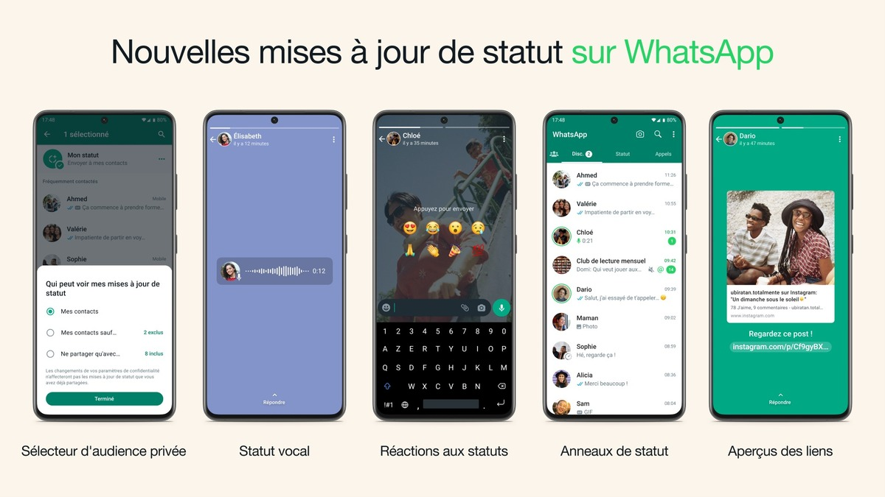
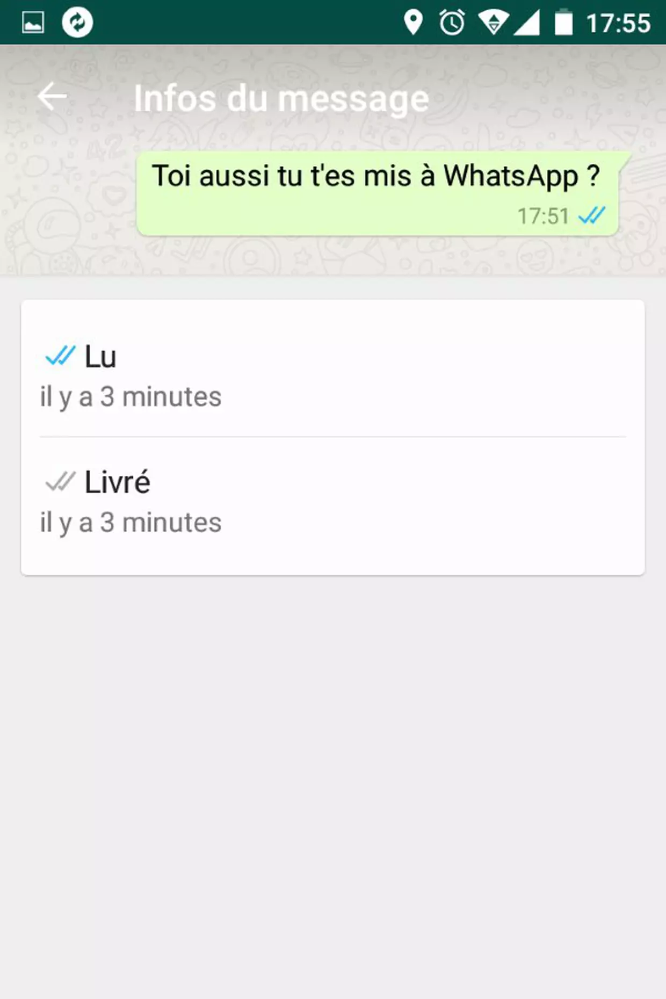

Qu'est ce que Whatsapp ?
L'entreprise Whatsapp, entreprise ayant un siège social en Irlande à Merrion Road Meta.
En mars 2018, 52 % des Français utilisent WhatsApp pour communiquer en famille
Créé en Janvier 2019, Whatsapp est une application ayant pour objectif de creer une application qui ne demanderait,
pour s'inscrire, qu'un numéro de téléphone, sans profil pouvant être revendu, et ne stockant pas les messages envoyés;
ce qui permet d'assurer une meilleure sécurité.
Il n'y a pas exactement de public visé, étant donné que c'est une application qui cherche à toucher un grand nombre d'utilisateur,
mais on pourrait dire que le but de cette entreprise est de permettre des échanges à distance entre les
différentes générations grâce à un réseau social de qualité chiffré de bout en bout.
Cette entreprise se démarque par une grande diversité dans ses options, comme les appels vidéo , audio , les groupes de discussion
criptés, le partage facile de photos et vidéos qui se téléchargent automatiquement sur le téléphone, la possibilité de voir l'heure à laquelle
une personne à vu votre message, mais aussi la nouvelle possibilité de partager du contenu à travers des stories et enfin la possibilité de faire des
sauvegardes .
De nombreuses autres fonctionnalitées intéréssantes sont dans l'application, si vous souhaitez en savoir plus, allez sur le site de Whatsapp:
Lien vers le site officiel de Whatsapp



Les usages publics possibles sont l'envoi de photos et de vidéos dans des groupes de discussion, la création de groupe discussion,
la création de story; mais d'un point de vu privé, on peut envoyer un message à une personne sans avoir de doute sur si la personne à
reçu le message ou non.

En Octobre 2013, WhatsApp annonce avoir 50 millions d'utilisateurs actifs mensuels de plus que deux mois
avant, 400 millions en décembre, et 450 millions en février 2014; on peut donc dire que le nombre d'abonnés ne cesse d'augmenter
, pour arriver à 2 milliards d’utilisateurs actifs mensuels sur WhatsApp dans le monde en 2024.
Sur le play store et l'apple store, cette application est gratuite, sans publicité.
Cette application ne serait pas comme ça sans les services aux entreprises et les commissions pour les transactions financières par le biais de WhatsApp Business
qui est la sources de revenus principal de Whatsapp.
Confidentialité
Pour une garantie de satisfaction envers ses utilisateurs, whatsapp à mis en place une politique de confidentialité sécurisant les données de chacun, en donnant la possibilité à ses client de choisir ce qu'ils veulent montrer d'eux. Pour avoir plus d'information, cliquez ici.
Bilan
Cyberharcelement
Ce réseau social impose néanmoins d'accepter des conditions d'utilisation bien précise, afin de protéger ses utilisateurs de menaces ou autres comportements pas appropriés, comme le Cyberharcelement.

Cette page a été créée par C et H en 2024 lors d'un devoir sur la création d'un site internet sur les réseaux sociaux et sur le Cyberharcelement .